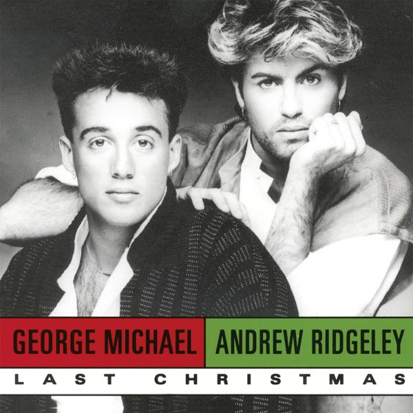
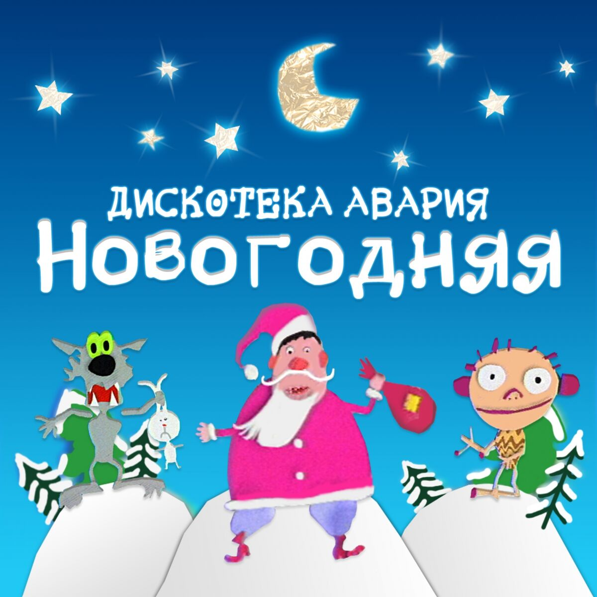
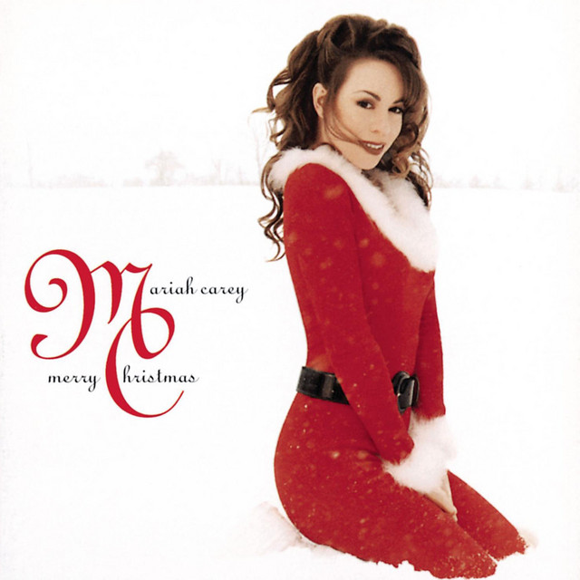

"Last Christmas" - песня английского поп-дуэта Wham!. Написанная и спродюсированная Джорджем Майклом , она была выпущена 3 декабря 1984 года на лейбле CBS Records по всему миру и как двойной A-side на лейбле Epic Records с " Everything She Wants " в нескольких европейских странах. «Last Christmas» зародилась в 1983 году, когда Джордж Майкл и Эндрю Риджли гостили у родителей Майкла. Она была написана Майклом в его детской спальне. [ 3 ] Майкл сыграл Риджли вступление и припев к «Last Christmas», которую Риджли позже назвал «моментом чуда».space

"Новогодняя"популярная новогодняя песня в исполнении советской и российской музыкальной группы Дискотека Авария. Песня была записана в 1999 году. В 1999 году Рыжов и Тимофеев пришли в студию звукозаписи «Союз» и предложили продюсерам несколько композиций группы. Студия включила их песни в сборники популярной музыки, после чего о группе узнала вся Россия. Затем музыканты выпустили свой второй альбом «Марафон» (1999), в этом сборнике была и песня «Новогодняя»[3]. До этого шуточную новогоднюю песню музыканты и раньше исполняли на дискотеках своего родного города. Но во время работы над альбомом «Марафон» они решили основательно переделать композицию. Именно тогда Алексей Рыжов и придумал теперь уже легендарный припев.space

"All I Want for Christmas Is You"— песня американской певицы и автора песен Мэрайи Кэри из её четвёртого студийного альбома и первого праздничного альбома Merry Christmas (1994). Написанная и спродюсированная Кэри и Уолтером Афанасьеффом , песня была выпущена в качестве ведущего сингла с альбома 29 октября 1994 года компанией Columbia Records . Трек представляет собой быструю любовную песню, включающую звон колокольчиков , бэк-вокал и синтезаторы. Она получила признание критиков, а The New Yorker описал её как «одно из немногих достойных современных дополнений к праздничному канону». Песня стала рождественским стандартом , со значительным ростом популярности каждый декабрь.